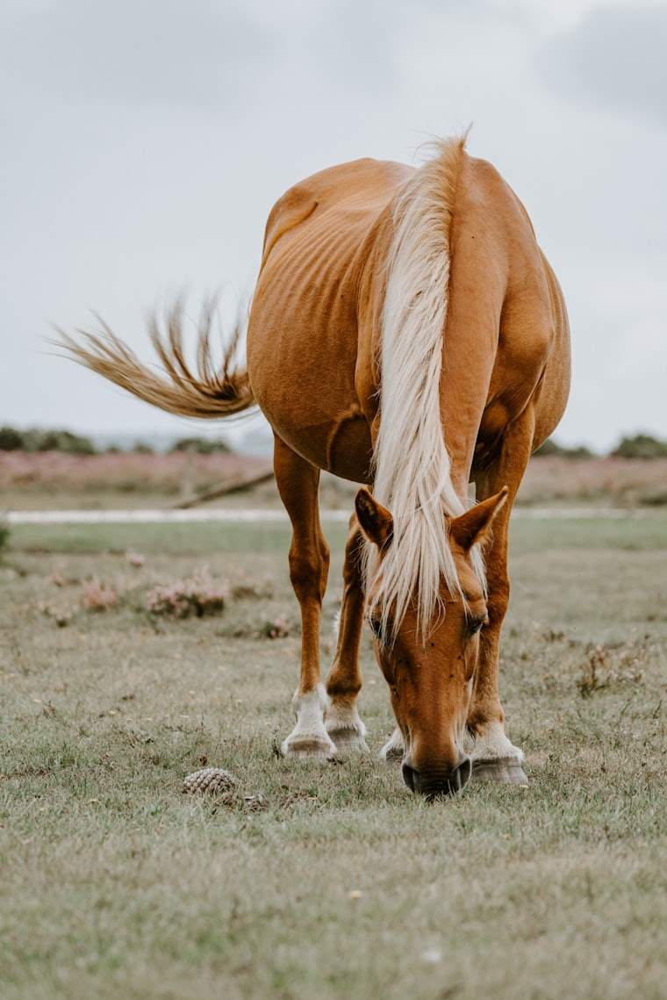
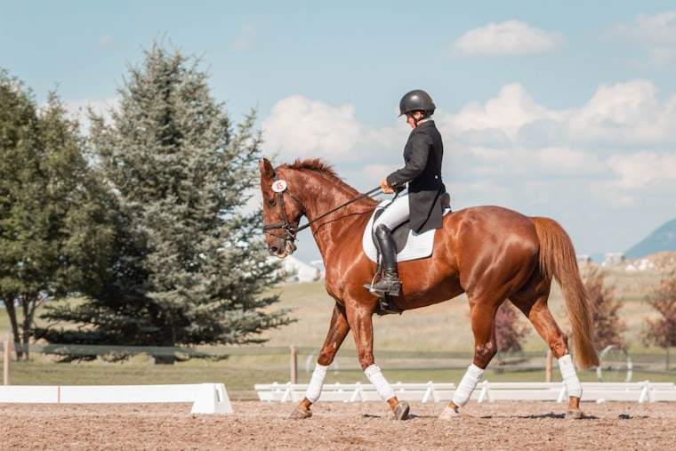

Voor wie wij er zijn
Drie deuren, één domein.
Elke bezoeker volgt zijn eigen pad door St. Hubert. Kies uw ingang en ontdek wat de club voor u betekent.
I

Private members
Vol pension in alle rust, ruime buitenstallingen en persoonlijke begeleiding voor u en uw paard.
Ontdek het membership
II

Professionele ruiters
Training, wedstrijdbegeleiding en faciliteiten op niveau — voor wie de sport ernstig neemt.
Voor professionals
III

Veilingen
Exclusieve paardenveilingen in een uniek kader, met internationale allure en Kempense gastvrijheid.
Bekijk de veilingen